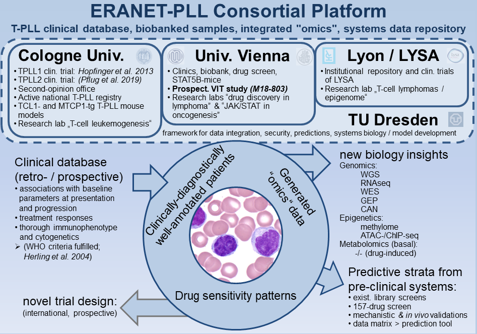
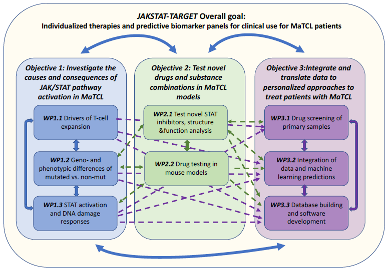

ImmuneT-ME builds on a decade of European collaboration in T-cell malignancies. Explore the consortia that paved the way.
ERANET-PLL (2019–2023) was a European research consortium funded under the ERA-NET/TRANSCAN-2 initiative, bringing together interdisciplinary partners from Germany, Austria, and France to advance translational research in T-cell prolymphocytic leukemia (T-PLL). Coordinated by Marco Herling, the consortium integrated genomic, epigenetic, and metabolic profiling with computational approaches to better understand disease biology and therapeutic vulnerabilities. A central goal was the development of predictive models for drug response and the identification of effective targeted treatment strategies for this rare and aggressive leukemia.

JAKSTAT-TARGET (2019–2023) was an international ERA PerMed-funded consortium focused on advancing personalized therapies for mature T-cell leukemias and lymphomas driven by JAK/STAT pathway alterations. Coordinated by Satu Mustjoki, the project brought together experts in hematology, immunology, computational biology, and drug development to investigate JAK/STAT mutations and their role in disease progression. By integrating genomic profiling, functional drug screening, and machine learning, the consortium aimed to identify targeted therapies and predictive biomarkers, and to inform future clinical trials in T-cell malignancies.
